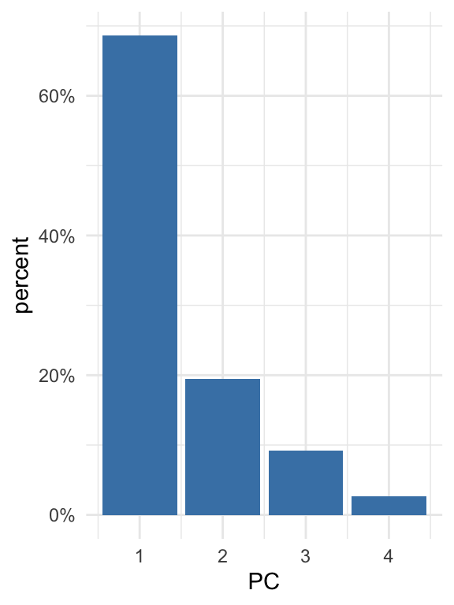
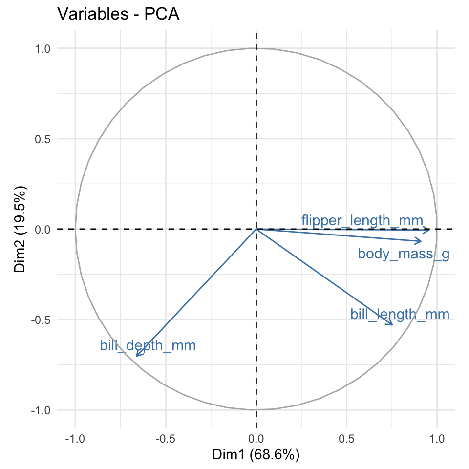

Chapter 10 Principal component analysis (PCA)
library(tidyverse)
library(broom)10.1 Indledning og læringsmålene
10.1.1 Læringsmålene
Du skal være i stand til at
- Forstå koncepten bag principal component analysis (PCA)
- Benytte PCA i R og lave et plot af et datasæt i to dimensioner
- Vurdere den relative varians forklarede af de forskellige components
- Anvende PCA til at vurdere variablernes bidrag til de principal components
10.1.2 Introduktion til chapter
Principal component analysis er en meget populær og benyttet statistike metode og kan anvendes til bla. at visualisere data med et højt antal dimensioner i et enkelt scatter plot med to dimensioner. Det er meget nyttigt for at se den underliggende struktur i datasættet og indenfor biologi er det meget brugt til at blandt andet visualisere hvor de forskellige samples eller replikates sidder relative til hinanden - for eksempel for at se, om de controls samples og treatment samples fremgå i samme steder på plottet (som indikere at de ligner hinanden).
10.1.3 Video ressourcer
- Video 1 - hvad er PCA?
Link her hvis det ikke virker nedenunder: https://player.vimeo.com/video/556581604
- Video 2 - hvordan man lave PCA i R og få output i tidy form
Link her hvis det ikke virker nedenunder: https://player.vimeo.com/video/556581588
- Video 3 - hvordan man visualisere de data (principal components, rotation matrix)
Link her hvis det ikke virker nedenunder: https://player.vimeo.com/video/556787141
10.2 Hvad er principal component analysis (PCA)?
I sidste lektion arbejdede vi med penguins, hvor vi så at der faktisk var fire numeriske variabler - altså fire dimensioner - som blev brugt til at lave k-means clustering.
library(palmerpenguins)
penguins <- penguins %>%
drop_na() %>%
mutate(year=as.factor(year))
penguins %>% select(where(is.numeric)) %>% head()## # A tibble: 6 × 4
## bill_length_mm bill_depth_mm flipper_length_mm body_mass_g
## <dbl> <dbl> <int> <int>
## 1 39.1 18.7 181 3750
## 2 39.5 17.4 186 3800
## 3 40.3 18 195 3250
## 4 36.7 19.3 193 3450
## 5 39.3 20.6 190 3650
## 6 38.9 17.8 181 3625Når man laver et plot for at vise de forskellige clusters, få man et problem - hvilke to variable skal plottes? Man kan plotte hver eneste pair af variabler. For eksempel kan man prøve en pakke der hedder GGally, som automatiske kan plotte de forskellige pairs af numeriske variabler og beregner korrelationen mellem variablerne.
require(GGally)## Indlæser krævet pakke: GGally## Registered S3 method overwritten by 'GGally':
## method from
## +.gg ggplot2penguins %>%
ggscatmat(columns = 3:6 ,color = "species", corMethod = "pearson") +
scale_color_brewer(palette = "Set2") +
theme_bw()Problemmet er, at så snart antallet af dimensioner i datasættet bliver større end 4, bliver plottet alt for kompleks og pladskrævende.
En løsning til problemmet er at projektere datasættet ned indtil et mindre antal demensioner (fk. kun 2 dimensioner). Disse dimensioner fanger oplysninger fra alle variablerne i datasættet, og derfor når man lave et scatter plot, får man repræsenteret det hele datasæt i stedet for kun to udvalgte variabler. Metoden for at lave disse såkaldte ‘projektion’ kaldes for ‘princial component analysis.’
10.2.1 Simpel eksempel med to dimensioner
Man kan prøve at forstå hvordan PCA fungerer ved at kigge på et simpelt eksempel med 2 dimensioner:
#simulere data med en høj korrelation
a <- rnorm(250,1,2)
b <- a + rnorm(250,0,.5)
df <- tibble(a,b)
ggplot(df,aes(a,b)) +
geom_point() +
theme_minimal()
Vi kan se her, at der er en meget store korrelation mellem a og b. Selvom datasættet er plottet i 2 dimensioner kan de næsten forklares af én linje - en såkaldte bedste rette linje der passer bedste gennem punkterne.
df <- tibble(a,b)
ggplot(df,aes(a,b)) +
geom_point() +
theme_minimal() +
geom_smooth(method="lm",se=FALSE)## `geom_smooth()` using formula 'y ~ x'Med andre ord kan vi næsten forklare datasættet i blot én dimension - punkternes afstand langt linjen. Når man tager alle punkterne og beskriver dem langt én linje som bedste beskrive variansen i datasættet, kaldes den linje for den første principal component (PC1). Man kan dernæst beskriver en anden linje som er vinkelrettet til PC1 som bedste forklarer variancen i de data som ikke var fanget af PC1 - det kaldes for den anden princal component (PC2).
Vi kan se her PC1 og PC2 plottet:

Når vi tager PC1 and PC2 og plotter dem som henholdvis x-aksen og y-aksen, svarer det til en drejning af akserne i plottet (vi finder PC1 og PC2 fra funktionen prcomp som jeg forklarer i næste sektion):
dat <- augment(prcomp(df),df)
ggplot(dat,aes(x=.fittedPC1,y=.fittedPC2)) +
geom_point() +
theme_minimal() +
geom_smooth(method="lm")## `geom_smooth()` using formula 'y ~ x'Vi kan se her, at de data flyder de plads på plottet bedre en før (og bemærk at de askse skala er blevet meget mindre i den nye y-aksen, da de data spreder sig meget mindre langt PC2 i forhold til PC1.)
Det her er kun et eksempel hvor vores oprindelige data ligger i to dimensions (to variabler), for at gøre det nemt at visualisere dem i et plot, men de fleste datasæt (fk penguins, iris osv.) har flere end to dimensioner. Vi kan godt lave samme process, hvor vi definerer PC1 som forklarer så meget af variancen i de data som muligt, og dernæst PC2 som forklarer nogle af variancen ikke fanget af PC1, og dernæst PC3 osv., efter hvor mange dimensioner de data har. I mange praktisk situationer vælger man de første to componenter, som er mest vigtige, da de forklarer mest af variancen i de data i forhold til de andre componenter.
“So to sum up, the idea of PCA is simple — reduce the number of variables of a data set, while preserving as much information as possible.” https://builtin.com/data-science/step-step-explanation-principal-component-analysis
10.3 Fit PCA to data in R
library(broom)Lad os skifte tilbage til nogle virkelige data for at benytte prcomp: datasættet penguins. Med prcomp fokuserer vi kun på numeriske variabler, så vi bruger select med where(is.numeric) og så anvender scaling ved at specificere scale = TRUE indenfor funktionen prcomp.
pca_fit <- penguins %>%
select(where(is.numeric)) %>% # retain only numeric columns
prcomp(scale = TRUE) # do PCA on scaled data
summary(pca_fit)## Importance of components:
## PC1 PC2 PC3 PC4
## Standard deviation 1.6569 0.8821 0.60716 0.32846
## Proportion of Variance 0.6863 0.1945 0.09216 0.02697
## Cumulative Proportion 0.6863 0.8809 0.97303 1.00000Proportion of Variance indikerer hvor meget af variancen i de data blev forklaret af de forskellige komponenter. Vi kan se, at PC1 forklaret omkring 69% og de første to komponenter sammen forklarer 88% af variancen i de data. Derfor hvis vi viser et plot af de første to komponenter ved vi, at vi har fanget rigtig meget oplysninger om de fire variabler i datasæsttet.
10.4 Integrere PCA resultater med broom-pakke
Der er flere ting som kan være nyttige at lave med vores PCA resultater:
- Lave et plot af datasættet ud fra de første to principal components
- Se for meget af variansen i datasættet er forklaret af de forskellige components
- Bruge den rotation matrix til at se, hvordan variabler sidder med relative til hinanden
For at få lavet vores plot af de principal components kan vi benytte funktionen augment() ligesom vi gjorde i vores sidste lektion med k-means clustering. Her få vi værdierne til hver af de fire principal components sammen med den oprindelige datasæt.
pca_fit_augment <- pca_fit %>%
augment(penguins) # add original dataset back in
pca_fit_augment## # A tibble: 333 × 13
## .rownames species island bill_length_mm bill_depth_mm flipper_length_mm
## <chr> <fct> <fct> <dbl> <dbl> <int>
## 1 1 Adelie Torgersen 39.1 18.7 181
## 2 2 Adelie Torgersen 39.5 17.4 186
## 3 3 Adelie Torgersen 40.3 18 195
## 4 4 Adelie Torgersen 36.7 19.3 193
## 5 5 Adelie Torgersen 39.3 20.6 190
## 6 6 Adelie Torgersen 38.9 17.8 181
## 7 7 Adelie Torgersen 39.2 19.6 195
## 8 8 Adelie Torgersen 41.1 17.6 182
## 9 9 Adelie Torgersen 38.6 21.2 191
## 10 10 Adelie Torgersen 34.6 21.1 198
## # … with 323 more rows, and 7 more variables: body_mass_g <int>, sex <fct>,
## # year <fct>, .fittedPC1 <dbl>, .fittedPC2 <dbl>, .fittedPC3 <dbl>,
## # .fittedPC4 <dbl>Vi kan tage pca_fit_augment og lave et plot af de første to principal components:
pca_fit_augment %>%
ggplot(aes(x=.fittedPC1, y=.fittedPC2, color = species)) +
geom_point() +
theme_bw()
Vi kan også integrere de clusters som vi fik fra funktionen kmeans() i vores PCA ved at anvende funktionen augment() på resultaterne fra kmeans og vores data som allerede har resultaterne fra pca. Da både PCA og k-means fanger oplysninger om strukturen af de data baserede på de fire numeriske variabler, kan man forventer en bedre sammenligning mellem de to (i forhold til at sammenligne de clusters med et plot med kun to af variablerne).
penguins_scaled <- penguins %>% select(where(is.numeric)) %>% scale
kclust <- kmeans(penguins_scaled,centers = 3)
kclust %>% augment(pca_fit_augment) %>%
ggplot(aes(x=.fittedPC1, y=.fittedPC2, color = .cluster)) +
geom_point() +
theme_bw()
Output med tidy
Næste kigger vi på variansen i datasættet som er blevet fanget af hver af de forskellige components. Man kan udtrække oplysningerne ved at benytte funktionen tidy() fra pakken broom, og ved at angiv matrix = "eigenvalues" indenfor tidy.
Det kaldes for “eigenvalues” fordi, hvis man kigger på matematikken bag principal component analysis, tager man udgangspunkt i en covariance matrix. En covariance matrix beskriver sammenhængen eller korrelationen mellem de forskellige variabler. Man bruger denne covariance matrix til at beregne de såkaldte eigenvalues og deres tilsvarende eigenvectors.
Det er faktisk den største eigenvalue som fortæller os om den første principal component - det fortæller os hvor meget af variansen i datasættet den første principal component fanger - jo større det er relativ til de andre eigenvalues, jo mere variansen man forklarer med den første principal component. Og den næste største fortæller os om den anden prinical component og så videre.
pca_fit_tidy <- pca_fit %>%
tidy(matrix = "eigenvalues")
pca_fit_tidy## # A tibble: 4 × 4
## PC std.dev percent cumulative
## <dbl> <dbl> <dbl> <dbl>
## 1 1 1.66 0.686 0.686
## 2 2 0.882 0.195 0.881
## 3 3 0.607 0.0922 0.973
## 4 4 0.328 0.0270 1Lad os visualisere de tal her i procenttal, med at specificere labels = scales::percent_format() indenfor scale_y_continuous - så vi bare ændre på de tal som kan ses på y-aksen.
pca_fit_tidy %>%
ggplot(aes(x = PC, y = percent)) +
geom_bar(stat="identity", fill="steelblue") +
scale_y_continuous(
labels = scales::percent_format(), #convert labels to percent format
) +
theme_minimal()
På den ene side hvis der er meget variance som er forklaret af de første components tilsammen, betyder det at der er en del redundans i datasættet, på grund af, at mange af de variabler har en tæt sammenhæng med hinanden. På den anden side hvis der er en meget lille andel af variancen som er forklaret af de første components tilsammen, betyder det at det er svært at beskrive datasættet i mindre dimensioner (fordi der næsten er ingen sammenhæng mellem variablerne) - i dette tilfælde, hvor datasættet er mere kompleks, er PCA mindre effektiv.
10.4.1 Rotation matrix for at udtrækker bidragen af de forskellige variabler
De eigenvalues kan anvendes til at undersøge variancen i datasættet, men deres tilsvarende eigenvectors fortæller os om, hvordan de forskellige variabler er kombineret til at få de endelige principal component værdier, som vi bruger fk. i et scatter plot. De eigenvectors bruges til at lave et matrix som hedder ‘rotation matrix.’
Jeg anvender funktionen pivot_wider for at få vores matrix mere klart at se. Vi kan se at vi har variablerne her på rækkerne og de forskellige prinicpal components i kolonnerne.
pca_fit_rotate <- pca_fit %>%
tidy(matrix = "rotation") %>%
pivot_wider(names_from = "PC", names_prefix = "PC", values_from = "value")
pca_fit_rotate## # A tibble: 4 × 5
## column PC1 PC2 PC3 PC4
## <chr> <dbl> <dbl> <dbl> <dbl>
## 1 bill_length_mm 0.454 -0.600 -0.642 0.145
## 2 bill_depth_mm -0.399 -0.796 0.426 -0.160
## 3 flipper_length_mm 0.577 -0.00579 0.236 -0.782
## 4 body_mass_g 0.550 -0.0765 0.592 0.585Den rotation matrix fortæller os hvordan man beregner værdierne af de principal components for alle observationer. For eksempel tager vi vores første observation, beregne 0.45 gange de bill length, og så minus 0.4 gang de bill depth, og så plus 0.58 x den flipper length og så plus 0.55 x body_mass. Og så har vi værdien for observationen langt den første princip komponent.
Vi kan andvende den rotation matrix til at se hvordan de forskellige variabler relatere til hinhanden. Variablerne som er tæt på hinanden i plottet ligner hinanden. Vi kan se at flipper_length_mm og body_mass_g ligner hinhanen ret meget i vores datasæt, mens bill_depth_mm sidder over til venstre langt den første principal component, så det måske indeholder nogle oplysninger om pingvinerne, der ikke kunne fanges i de andre variabler.
library(ggrepel)
pca_fit_rotate %>%
ggplot(aes(x=PC1,y=PC2,colour=column)) +
geom_point(size=3) +
geom_text_repel(aes(label=column)) +
theme_minimal()
10.4.2 Pakken factoextra
R-pakken factoextra kan avendes til at lave et lignende plot fra de rotation matrix automatiske, og den arbejder ovenpå ggplot2 så man kan ændret temaet osv. Man kan se hvordan de fungere i følgende kode.
- Man få det varians procenttal på akserne.
- Lokationer af pilehovederne er fra den rotation matrix.
- Jo mindre vinklen mellem to linjer er, og tættere på de er til hinanden
- Jo nærmere til den cirkle pilehoveredne er, jo mere indflydelse den variable har i de principal components.
library(factoextra)
fviz_pca_var(pca_fit, col.var="steelblue",repel = TRUE)+
theme_minimal()
10.5 Quiz og problemstillinger
Problem 1) Quiz på Absalon
Download følgende datasæt ved at køre følgende kode chunk:
cancer <- read.csv(url("https://www.dropbox.com/s/4qa37itw9wtwtjg/breast-cancer.csv?dl=1")) %>% as_tibble() %>% select(-id)
cancer %>% glimpse()## Rows: 569
## Columns: 31
## $ diagnosis <chr> "M", "M", "M", "M", "M", "M", "M", "M", "M", "…
## $ radius_mean <dbl> 17.990, 20.570, 19.690, 11.420, 20.290, 12.450…
## $ texture_mean <dbl> 10.38, 17.77, 21.25, 20.38, 14.34, 15.70, 19.9…
## $ perimeter_mean <dbl> 122.80, 132.90, 130.00, 77.58, 135.10, 82.57, …
## $ area_mean <dbl> 1001.0, 1326.0, 1203.0, 386.1, 1297.0, 477.1, …
## $ smoothness_mean <dbl> 0.11840, 0.08474, 0.10960, 0.14250, 0.10030, 0…
## $ compactness_mean <dbl> 0.27760, 0.07864, 0.15990, 0.28390, 0.13280, 0…
## $ concavity_mean <dbl> 0.30010, 0.08690, 0.19740, 0.24140, 0.19800, 0…
## $ concave.points_mean <dbl> 0.14710, 0.07017, 0.12790, 0.10520, 0.10430, 0…
## $ symmetry_mean <dbl> 0.2419, 0.1812, 0.2069, 0.2597, 0.1809, 0.2087…
## $ fractal_dimension_mean <dbl> 0.07871, 0.05667, 0.05999, 0.09744, 0.05883, 0…
## $ radius_se <dbl> 1.0950, 0.5435, 0.7456, 0.4956, 0.7572, 0.3345…
## $ texture_se <dbl> 0.9053, 0.7339, 0.7869, 1.1560, 0.7813, 0.8902…
## $ perimeter_se <dbl> 8.589, 3.398, 4.585, 3.445, 5.438, 2.217, 3.18…
## $ area_se <dbl> 153.40, 74.08, 94.03, 27.23, 94.44, 27.19, 53.…
## $ smoothness_se <dbl> 0.006399, 0.005225, 0.006150, 0.009110, 0.0114…
## $ compactness_se <dbl> 0.049040, 0.013080, 0.040060, 0.074580, 0.0246…
## $ concavity_se <dbl> 0.05373, 0.01860, 0.03832, 0.05661, 0.05688, 0…
## $ concave.points_se <dbl> 0.015870, 0.013400, 0.020580, 0.018670, 0.0188…
## $ symmetry_se <dbl> 0.03003, 0.01389, 0.02250, 0.05963, 0.01756, 0…
## $ fractal_dimension_se <dbl> 0.006193, 0.003532, 0.004571, 0.009208, 0.0051…
## $ radius_worst <dbl> 25.38, 24.99, 23.57, 14.91, 22.54, 15.47, 22.8…
## $ texture_worst <dbl> 17.33, 23.41, 25.53, 26.50, 16.67, 23.75, 27.6…
## $ perimeter_worst <dbl> 184.60, 158.80, 152.50, 98.87, 152.20, 103.40,…
## $ area_worst <dbl> 2019.0, 1956.0, 1709.0, 567.7, 1575.0, 741.6, …
## $ smoothness_worst <dbl> 0.1622, 0.1238, 0.1444, 0.2098, 0.1374, 0.1791…
## $ compactness_worst <dbl> 0.6656, 0.1866, 0.4245, 0.8663, 0.2050, 0.5249…
## $ concavity_worst <dbl> 0.71190, 0.24160, 0.45040, 0.68690, 0.40000, 0…
## $ concave.points_worst <dbl> 0.26540, 0.18600, 0.24300, 0.25750, 0.16250, 0…
## $ symmetry_worst <dbl> 0.4601, 0.2750, 0.3613, 0.6638, 0.2364, 0.3985…
## $ fractal_dimension_worst <dbl> 0.11890, 0.08902, 0.08758, 0.17300, 0.07678, 0…Problem 2) Anvend funktionen ggscatmat fra pakken GGally til at lave et plot hvor man sammenligne fem af de variabler.
- Man kan lave en tilfældig sample af fem variabler med at angive
columns = sample(2:31,5)indenforggscatmat. - Give farver efter factor variablen
diagnosisog vælger “person” somcorMethod. - Opfatter du, at der er en del redundans i de data (altså er der høje korrelationer mellem de forskellige variabler)?
Problem 3) Benyt funktionen prcomp til at beregne en principal component analysis af de data.
- Husk at det skal kun være numeriske variabler og angiv
scale=TRUEindenfor selve funktion. - Lav et
summaryaf resultaterne. Hvad er proportionen af variancen forklaret af den første principal component? - Hvad er proportionen af variancen forklaret af den første to principal components tilsammen?
Problem 4) Augment og plot Anvend augment til at tilføje de rådata til ovenstående resultater fra prcomp.
- Brug den til at lave et scatter plot af de første to principal components
- Giv farver efter
diagnosis - Skriv kort om man kan skelne imellem “M” og “B” fra variablen
diagnosisud fra de første to principal components.
Problem 5) Integrere kmeans clustering. Lav et clustering med kmeans på de data, med to clusters.
- Augment resultaterne til din rå data (med de
prcompresultater allerede tilføjet). - Lav et plot og give farver efter
.clusterog forme efterdiagnosis. - Sammenligne de clusters med
diagnosis.
Problem 6) tidy form og variansen Anvende tidy(matrix = "eigenvalues") til at få bidragen af de forskellige components til variansen i ddatasættet.
- Lav et barplot som viser de components på x-aksen og
percentpå y-aksen.
Problem 7) tidy form og rotation matrix Anvende tidy(matrix = "rotation") til at få den rotation matrix.
- Anvend
pivot_widertil at få den til wide form - Lav et scatter plot som viser de forskellige variabler relativ til hinanden
- Anvend
geom_text_repeltil at give labels til de variabler (kan være en god idé at anvendshow.legend=F)
10.6 Ekstra læsning
Step by step explanation: https://builtin.com/data-science/step-step-explanation-principal-component-analysis
PCA tidyverse style fra claus wilke: https://clauswilke.com/blog/2020/09/07/pca-tidyverse-style/
More PCA in tidyverse framework: https://tbradley1013.github.io/2018/02/01/pca-in-a-tidy-verse-framework/